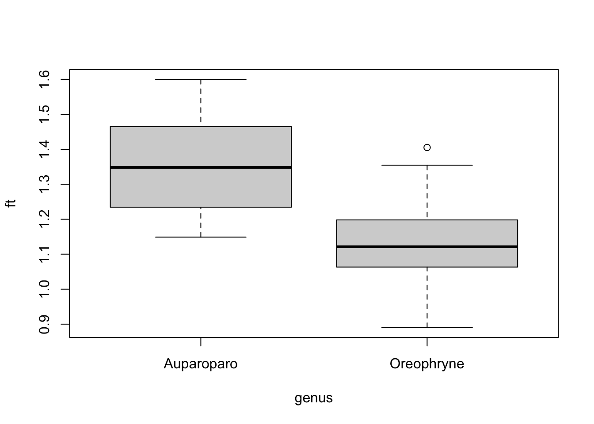
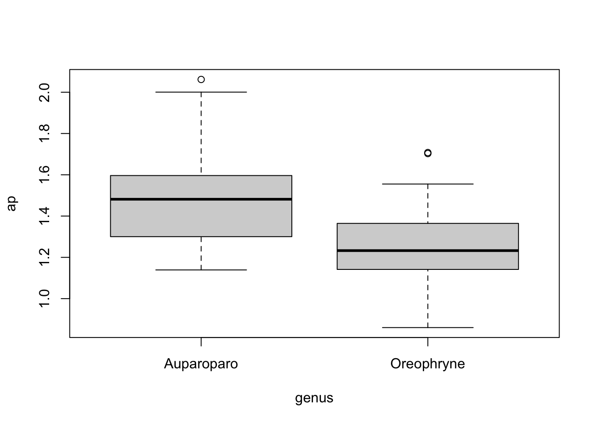
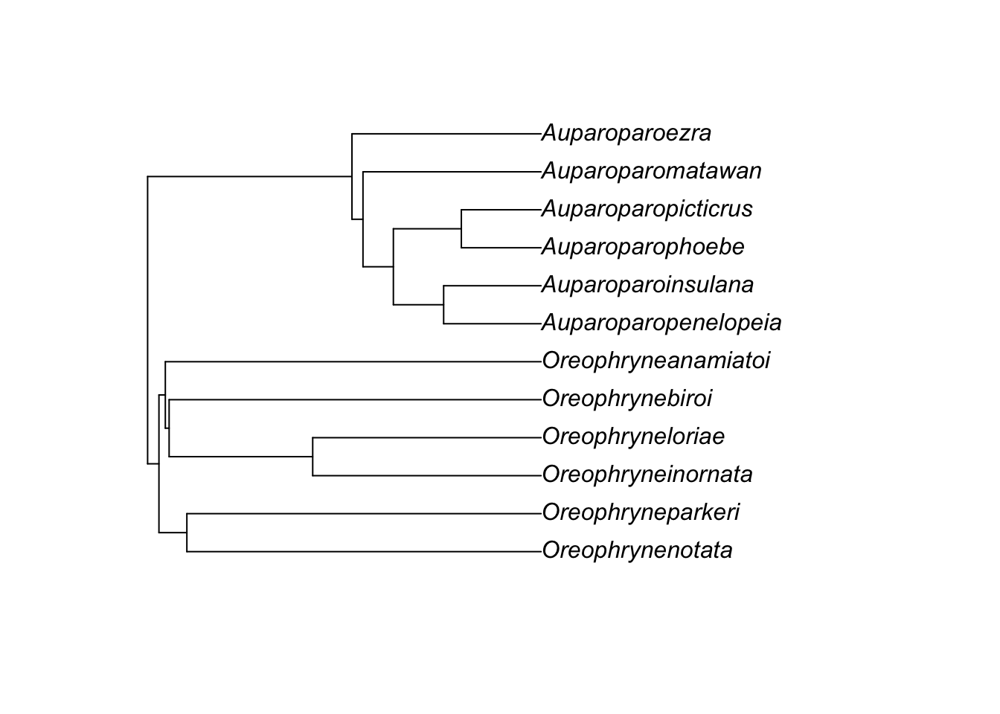
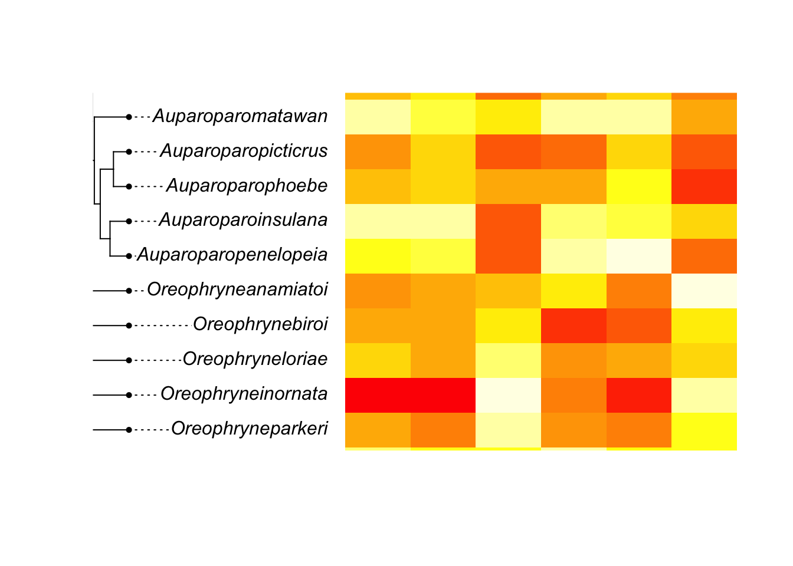

knitr::read_chunk('analysiscode.R')Assessing validity of two new taxonomic traits
Data Analysis
After discovering the Papuan genus of microhylid frog, (Oreophryne), is polyphyletic through molecular phylogenetic analysis, I seek to identify morphological characteristics to distinguish the two monophyletic clades. The genus containing type species “(Oreophryne senckenbergiana)” will retain the name (Oreophryne). The new genus will be called (Auparoparo) in this study.
Proposed traits
Through visual observation, I have suspected two distinctions between these highly convergent groups. I have measured images of museum specimens (6 species per genus, ~5 individuals per species) using the software ImageJ to assess if these traits are quantitatively different.
One is the ratio of finger pad width to toe pad width. This character will be represented by the variable ft. (Oreophryne)s tend to have more equally sized finger and toe pads so I expect their ft ratio to be closer to 1. (Auparoparo)s have larger finger pads than toe pads so I expect their ft ratio to be larger than 1.
The other trait I suspect is the shape of the upper palatal grooves. This character will be represented by the variable ap which is the ratio of the width of the grooves clostest to the nares (anterior) vs closest to the pharynx (posterior). (Oreophryne)s tend to have more parallel grooves so I expect their ap ratio to be closer to 1. (Auparoparo)s have grooves which taper towards the pharynx so I expect their ap ratio to be larger than 1.
Analysis
I will be testing a variety of analyses to look for significance in these traits.
Set up for R
Load packages, functions, and paths
#load needed packages. make sure they are installed.
require(ggplot2) #for plottingLoading required package: ggplot2require(magrittr) #for pipingLoading required package: magrittrrequire(knitr) #for formatting outputLoading required package: knitrrequire(dplyr)Loading required package: dplyr
Attaching package: 'dplyr'The following objects are masked from 'package:stats':
filter, lagThe following objects are masked from 'package:base':
intersect, setdiff, setequal, unionrequire(phytools)Loading required package: phytoolsLoading required package: ape
Attaching package: 'ape'The following object is masked from 'package:dplyr':
whereLoading required package: mapsrequire(skimr)Loading required package: skimrrequire(rempsyc)Loading required package: rempsycSuggested APA citation: Thériault, R. (2022). rempsyc: Convenience functions for psychology
(R package version 0.1.1) [Computer software]. https://rempsyc.remi-theriault.com require(effectsize)Loading required package: effectsizerequire(flextable)Loading required package: flextable
Attaching package: 'flextable'The following object is masked from 'package:ape':
rotaterequire(corrr)Loading required package: corrr
Attaching package: 'corrr'The following object is masked from 'package:skimr':
focusrequire(ggcorrplot)Loading required package: ggcorrplotrequire(FactoMineR)Loading required package: FactoMineRrequire(factoextra)Loading required package: factoextraWelcome! Want to learn more? See two factoextra-related books at https://goo.gl/ve3WBa#path to data and results
data_path <- "../../Data/Processed_data/processeddata.rds"
results_path <- "../../Results/"Load data
dat2 <- readRDS(data_path)# function to paste path to output filenames
addpath <- function( filename, path=data_path ) {
location <- paste( path, filename, sep="")
return( location )
}Summarize
Another look at the data
# create summary table of the data using skimr to use in paper
# variables, sample size, mean, standard error
sk <- skimr::skim(dat2) # save skim object
sk <- as.data.frame(sk) # save as data.frame
head(sk) # see the variable names skim_type skim_variable n_missing complete_rate character.min character.max
1 character genus 0 1 10 10
2 character species 0 1 4 10
3 numeric BPBM 0 1 NA NA
4 numeric SVL 0 1 NA NA
5 numeric finger 0 1 NA NA
6 numeric toe 0 1 NA NA
character.empty character.n_unique character.whitespace numeric.mean
1 0 2 0 NA
2 0 12 0 NA
3 NA NA NA 26667.435484
4 NA NA NA 24.822581
5 NA NA NA 1.810130
6 NA NA NA 1.501818
numeric.sd numeric.p0 numeric.p25 numeric.p50 numeric.p75 numeric.p100
1 NA NA NA NA NA NA
2 NA NA NA NA NA NA
3 9536.8049838 1.611900e+04 17983.250000 23133.000000 33777.500000 47656.000000
4 5.1612179 1.690000e+01 21.550000 24.600000 26.925000 39.400000
5 0.5482628 8.413504e-01 1.405488 1.756798 2.053678 3.544853
6 0.5644414 5.286453e-01 1.102037 1.420808 1.695300 3.197404
numeric.hist
1 <NA>
2 <NA>
3 ▇▂▅▂▂
4 ▅▇▅▂▁
5 ▅▇▇▂▁
6 ▃▇▃▁▁nrows <- dim(dat2)[1] # total number of rows
sk$N <- nrows - sk$n_missing # sample size of each variable# select only the variable, N, mean, sd, and category counts
sk.table <- sk[c("skim_variable", "N", "numeric.mean", "numeric.sd")]
names(sk.table) <- c("Variable", "N", "Mean", "SE") # rename SD as SE
sk.table$SE <- sk.table$SE/sqrt(sk.table$N) # calculate SE
options(knitr.kable.NA = "")
knitr::kable(sk.table, digits=2)| Variable | N | Mean | SE |
|---|---|---|---|
| genus | 62 | ||
| species | 62 | ||
| BPBM | 62 | 26667.44 | 1211.18 |
| SVL | 62 | 24.82 | 0.66 |
| finger | 62 | 1.81 | 0.07 |
| toe | 62 | 1.50 | 0.07 |
| ft | 62 | 1.24 | 0.02 |
| anterior | 62 | 2.00 | 0.04 |
| posterior | 62 | 1.49 | 0.04 |
| ap | 62 | 1.37 | 0.03 |
# save summary table
saveRDS(sk.table, file = addpath("summary_table.rds", results_path))Let’s look at our variables on a species and genus level
#lets see means for each species
dat2$gensp <- paste0(dat2$genus, dat2$species) #combine genus and species names to sort species by genus
spec.means <- dat2 %>%
group_by(gensp) %>%
summarise_at(vars(SVL, finger, toe, ft, anterior, posterior, ap),
list(mean))
print(spec.means)# A tibble: 12 × 8
gensp SVL finger toe ft anterior posterior ap
<chr> <dbl> <dbl> <dbl> <dbl> <dbl> <dbl> <dbl>
1 Auparoparoezra 24.6 1.82 1.32 1.39 2.10 1.44 1.47
2 Auparoparoinsulana 20.9 1.18 0.848 1.41 1.72 1.25 1.38
3 Auparoparomatawan 18.2 1.21 0.995 1.22 1.64 1.16 1.41
4 Auparoparopenelopeia 21.9 1.49 1.06 1.42 1.66 1.11 1.53
5 Auparoparophoebe 25.8 1.87 1.46 1.28 2.10 1.32 1.60
6 Auparoparopicticrus 27.3 2.02 1.41 1.42 2.24 1.44 1.55
7 Oreophryneanamiatoi 27.1 2.03 1.61 1.27 1.92 1.68 1.14
8 Oreophrynebiroi 26.2 1.94 1.60 1.22 2.38 1.77 1.35
9 Oreophryneinornata 35.4 2.83 2.72 1.04 2.20 1.93 1.18
10 Oreophryneloriae 24.9 1.74 1.60 1.09 2.12 1.58 1.36
11 Oreophrynenotata 18.2 1.23 1.07 1.15 1.67 1.33 1.28
12 Oreophryneparkeri 23.2 1.95 1.86 1.06 2.14 1.69 1.28# and for each genus
gen.means <- dat2 %>%
group_by(genus) %>%
summarise_at(vars(SVL, finger, toe, ft, anterior, posterior, ap),
list(mean))
print(gen.means)# A tibble: 2 × 8
genus SVL finger toe ft anterior posterior ap
<chr> <dbl> <dbl> <dbl> <dbl> <dbl> <dbl> <dbl>
1 Auparoparo 23.1 1.60 1.18 1.36 1.91 1.29 1.49
2 Oreophryne 26.4 2.01 1.80 1.13 2.08 1.68 1.26Box-and-whisker plots
Let’s see how the two ratio traits’ distributions look across genera
# plot to screen
with(dat2, boxplot(ft ~ genus))
# plot to .png file, can also do pdf using `pdf()` function
png(filename = addpath("genus_ft_boxplot.png", results_path))
with(dat2, boxplot(ft ~ genus))
dev.off()quartz_off_screen
2 # plot to screen
with(dat2, boxplot(ap ~ genus))
# plot to .png file, can also do pdf using `pdf()` function
png(filename = addpath("genus_ap_boxplot.png", results_path))
with(dat2, boxplot(ap ~ genus))
dev.off()quartz_off_screen
2 They seem to be different!
T-tests
Let’s see if there’s significance via t-test between genera
# trying package rempsyc to make pretty ttest tables, grouped by genus
t.test.results <- nice_t_test(
data = dat2,
response = names(dat2)[4:10],
group = "genus",
warning = FALSE)
t.test.results Dependent Variable t df p d CI_lower
1 SVL -2.667826 49.59027 1.028571e-02 -0.6666211 -1.1761061
2 finger -3.204496 54.01079 2.272034e-03 -0.8039195 -1.3191814
3 toe -5.309831 43.01911 3.644605e-06 -1.3196884 -1.8661697
4 ft 6.917789 59.59873 3.560283e-09 1.7589834 1.1648374
5 anterior -1.975234 59.69188 5.287120e-02 -0.5020737 -1.0061416
6 posterior -5.898589 49.38136 3.271089e-07 -1.4736465 -2.0321081
7 ap 4.294668 57.25606 6.846282e-05 1.0969460 0.5577581
CI_upper
1 -0.151879419
2 -0.282463245
3 -0.764154366
4 2.342486997
5 0.006044147
6 -0.905490439
7 1.628181396my_table <- nice_table(t.test.results)
my_tableWarning in raw_block(x, "html", ...): raw_block() requires Pandoc >= 2.0.0Dependent Variable | t | df | p | d | 95% CI |
|---|---|---|---|---|---|
SVL | -2.67 | 49.59 | .010 | -0.67 | [-1.18, -0.15] |
finger | -3.20 | 54.01 | .002 | -0.80 | [-1.32, -0.28] |
toe | -5.31 | 43.02 | < .001 | -1.32 | [-1.87, -0.76] |
ft | 6.92 | 59.60 | < .001 | 1.76 | [1.16, 2.34] |
anterior | -1.98 | 59.69 | .053 | -0.50 | [-1.01, 0.01] |
posterior | -5.90 | 49.38 | < .001 | -1.47 | [-2.03, -0.91] |
ap | 4.29 | 57.26 | < .001 | 1.10 | [0.56, 1.63] |
# t-test results are really only valid for the ratios ft and ap because finger/toe size and anterior/posterior palatal groove widths likely scale to body size, should be standardizedPhylogeny comparison
I am trimming our phylogeny to only include measured species and then plotting a character heat map using the means for each species
#I want to use one of the ways to plot either a heat map or dotTree as in this tutorial <http://www.phytools.org/Cordoba2017/ex/15/Plotting-methods.html>
dat3 <- as.data.frame(spec.means)
row.names(dat3) <- dat3$gensp #gensp must be rownames, no character columns allowed
dat4 <- dat3[,-c(1:2)]
tree_location <- "../../Data/Raw_data/asterophryinae_partitions.nex.timetree.nwk"
tree <- read.newick(tree_location)
species<-c("Oreophryneinornata", "Oreophryneloriae" , "Oreophrynenotata" ,
"Oreophryneparkeri" , "Oreophrynebiroi" , "Oreophryneanamiatoi"
,"Auparoparopenelopeia", "Auparoparoinsulana" , "Auparoparophoebe"
, "Auparoparopicticrus" , "Auparoparomatawan" , "Auparoparoezra" ) #select included taxa
pruned.tree<-drop.tip(tree,tree$tip.label[-match(species, tree$tip.label)])
write.tree(pruned.tree) #remove other taxa[1] "(((Oreophrynenotata:0.1332015,Oreophryneparkeri:0.1332016)71:0.0104983,(((Oreophryneinornata:0.0858773,Oreophryneloriae:0.08587722)75:0.0539994,Oreophrynebiroi:0.139877)55:0.00142565,Oreophryneanamiatoi:0.1413024)61:0.00239737)97:0.00426211,((((Auparoparopenelopeia:0.03663222,Auparoparoinsulana:0.0366323)100:0.0189085,(Auparoparophoebe:0.0299792,Auparoparopicticrus:0.02997924)100:0.0255615)98:0.01142652,Auparoparomatawan:0.0669673)72:0.00414723,Auparoparoezra:0.0711146)100:0.07684729)100;"plot(pruned.tree)
phylo.heatmap(pruned.tree,dat4,standardize=TRUE)
png(filename = addpath("phylo_heatmap.png", results_path))
phylo.heatmap(pruned.tree,dat4,standardize=TRUE)
dev.off()quartz_off_screen
2